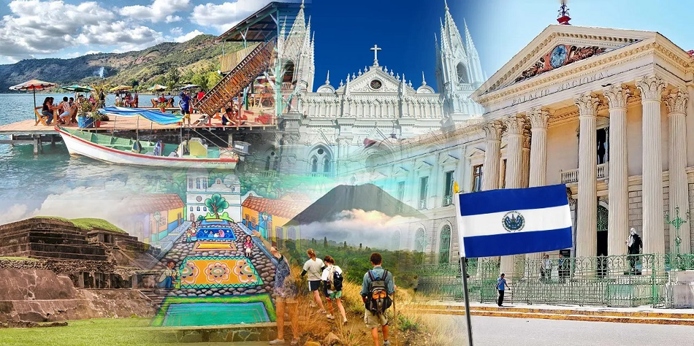
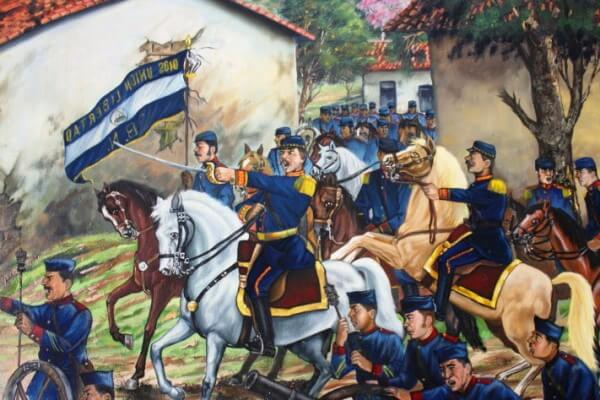

El Salvador es país montañoso y volcánico, cruzado de Este a Oeste por una gran cadena en que sobresalen varios volcanes. Los ríos más notables son el Paz, el Guascorán y el Lempa. El clima es cálido y húmedo en las costas y tierras bajas, y templado y muy sano en las alturas del interior.
Las dos franjas azules simbolizan los dos océanos que bañan a Centroamérica: el Océano Pacifico y el Atlántico, el color blanco simboliza la paz.
Lleva en medio de la franja blanca el Escudo Nacional o la leyenda «Dios, Unión, Libertad». El Escudo es llevado si la organización que coloca la bandera es gubernamental (Casa Presidencial, embajadas, delegaciones del gobierno, etc.) y todo lo que concierne el ejercito (cuarteles, aviones, buques, etc.). Mientras que la leyenda «Dios, Unión, Libertad» en letras doradas, se utiliza si es colocada por cualquier individuo u organización que no sea del gobierno, como las escuelas, edificios públicos, barcos mercantes, etc.
El escudo del escudo de armas significa los cinco colosos volcanes, surgidos en una fragosa entraña, significan la bravura de la raza, las disgregadas parcelas de la Patria Grande y el principio de nuestra nacionalidad, enfatizado en la leyenda que circunda el dibujo..
Cuscatlán era la ciudad principal de los primeros de 1524 a 1526 fue conquistado el país por los hermanos Alvarado y durante el período colonial formó parte de la provincia de Guatemala. En 1821 se proclamó la independencia, y al año siguiente vino a formar parte del Imperio creado por Iturbide.
Tiene una superficie de 21.040 Km2 con lo que se encuentra entre los países más pequeños